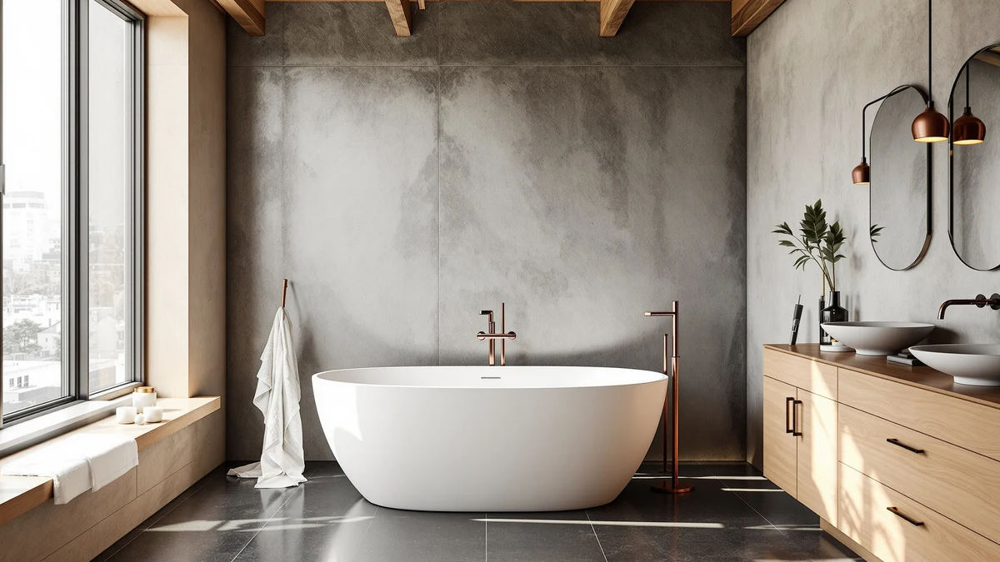

Best Freestanding Tub for the Money (2026)
Prices and picks verified as of September 2026. Independent, reader-supported reviews.


Quick Answer
The best freestanding tub for the money is the Freestanding Bathtub 59 inch Acrylic from EliteEdge. At $449.99 for a 59-inch tub, it costs about $7.63 per inch of tub length, the lowest rate of the seven acrylic freestanding tubs we compared. If you need more length and can spend a little more, the Garvee 67 Inch Acrylic Freestanding Bathtub at $552.48 is the best value among the longer options.
Our pick: Freestanding Bathtub 59 inch Acrylic — $449.99 Check Price on Amazon
Bottom line: our top pick is the Freestanding Bathtub 59 inch Acrylic Free Standing Tub 59 Inch at $679.99. The best budget option is the 67" Acrylic Freestanding Bathtub at $539.99.
Things to Know Before You Buy
- Price alone does not identify the best freestanding tub for the money. Dividing price by tub length, or price per inch, shows which tubs pack more tub for your dollar.
- All seven tubs in this comparison are acrylic, which keeps the price down and the tub lighter than cast iron or enameled steel.
- Tub length ranges from 59 to 67 inches here. A longer tub is not automatically the better deal: two of the priciest tubs in this lineup are also the worst value per inch.
- Brand history varies widely. WOODBRIDGE has the longest track record in bath fixtures, while Garvee and GarveeLife are newer entrants, so shopping on price alone will not always turn up the best freestanding tub for the money for your priorities.
The best freestanding tub for the money in our comparison is the Freestanding Bathtub 59 inch Acrylic from EliteEdge, priced at $449.99. We looked at seven acrylic freestanding tubs ranging from $449.99 to $808.27 and found that price alone does not predict value. Divide price by tub length and the EliteEdge model comes out cheapest at roughly $7.63 per inch, while a similarly sized tub from a different brand can cost 50 percent more per inch for the same footprint.
You will find both 59-inch and 67-inch tubs in this lineup, and the price gap between them is not always tied to size. The Garvee 67 Inch Acrylic Freestanding Bathtub costs $552.48, only about $103 more than our top pick, yet delivers eight extra inches of tub length. Compare that to the 67-inch IDEALHOUSE Deep model at $808.27, nearly $260 more than the Garvee tub for the identical 67-inch footprint. That gap is the clearest signal in this comparison that brand and finish, not length, drive most of the price difference.
We built this guide around price per inch because it is the one number you can calculate from a product listing without guessing at material grade or wall thickness. Below, you will find our full breakdown of all seven tubs, a comparison table, and the reasoning behind each pick, so you can decide whether the cheapest option fits your bathroom or whether a longer tub is worth the extra cost for your household.
Why You Should Trust Us
Best Freestanding Bathtubs has covered bathroom fixtures since the site launched, and every roundup follows the same process: we start from real product listings, not press releases, and we verify prices, dimensions, and brand claims against the retailer's own data before publishing. Ilane Tall, our home and bath expert, reviews every guide before it goes live and has spent years researching bathroom renovations on a budget. When we set out to find the best freestanding tub for the money, we treated price as a variable to analyze rather than a number to repeat, which is why every pick below includes the math behind its value.
How We Picked
We started with every acrylic freestanding tub in our product database that fell between 59 and 67 inches, the range that fits most US bathroom alcoves without a full plumbing overhaul. From there, we calculated price per inch of tub length for each model, since a longer tub at a similar price delivers more usable bathing space for the same money. We also weighed brand history: an established name like WOODBRIDGE carries a longer track record than a newer entrant like Garvee, and we noted that tradeoff rather than ignoring it. Tubs that charged a premium price without a matching increase in length or a stronger brand behind them dropped down our ranking of the best freestanding tub for the money.
How We Compared
We do not run a physical testing lab, so we built a value comparison instead. For each of the seven tubs, we recorded the manufacturer-listed price and length, then divided price by length to get a per-inch cost that lets you compare tubs of different sizes on equal footing. We cross-checked those prices and dimensions against each retailer's own listing to catch inconsistencies before publishing. That process is how the EliteEdge tub separated itself as the best freestanding tub for the money in this batch, and how we ranked the remaining six tubs by how much tub you get for each dollar spent.
Our Picks

Freestanding Bathtub 59 inch Acrylic
What we like
- Lowest price of the seven tubs we compared, at $449.99
- Works out to about $7.63 per inch of tub length, the best rate in this lineup
- 59-inch footprint fits standard bathroom alcoves without extra plumbing work
Flaws but not dealbreakers
- Shorter 59-inch length offers less legroom than the 67-inch options
- No added finish or trim options to offset the plain, budget-focused design
| Material | — |
| Size | 59 Inch |
EliteEdge's 59-inch acrylic tub earns the top spot in our search for the best freestanding tub for the money because the math works out in its favor on every measure. At $449.99, it is the cheapest tub in this comparison outright, and once you divide that price by its 59-inch length, it comes out to roughly $7.63 per inch, the lowest rate among the seven tubs we looked at. Acrylic construction keeps the shell light enough for a straightforward installation, and the 59-inch length fits the same floor space as many standard alcove tubs, so swapping it in does not usually force a larger remodel.
This tub will not satisfy a bather who wants a long soak with room to stretch out, and EliteEdge did not add finish upgrades or trim options that some pricier tubs include. Those omissions are exactly what keeps the per-inch cost so low. For a shopper whose main question is which tub delivers the most bathing space for the least money, EliteEdge's 59-inch model answers that question directly, and it is why we rank it as the best freestanding tub for the money in this comparison.

67'' Acrylic Freestanding Bathtub Extra-Deep
What we like
- Extra-deep basin holds more water than the standard-depth tubs in this lineup
- 67-inch length gives more room to stretch out than the 59-inch options
- Comes in at $9.39 per inch, better value than three of the pricier tubs we compared
Flaws but not dealbreakers
- Costs about $179 more than our top pick for the same acrylic construction
- Needs more floor clearance than the 59-inch tubs in this comparison
| Material | — |
| Size | 67 Inch |
The 67-inch Acrylic Freestanding Bathtub Extra-Deep trades some of the value of our top pick for a deeper basin. IDEALHOUSE built the extra depth into this 67-inch tub to let a bather submerge further than a standard-depth model allows, and the longer 67-inch length adds room to stretch out that the 59-inch tubs in this comparison do not offer. At $629.08, it works out to about $9.39 per inch of tub length, which lands in the middle of the pack rather than at either extreme.
That price puts it roughly $179 above our top overall pick, and the tradeoff only makes sense if depth matters more to you than minimizing cost. Compared with the other 67-inch tubs we looked at, though, it is not the most expensive way to get that extra length. If a fuller soak is worth paying above our budget pick, this tub splits the difference instead of pushing you toward the priciest way to get there.

67" Acrylic Freestanding Bathtub Deep
What we like
- Deep basin and 67-inch length offer the most room of any tub we compared
- Acrylic build from the same maker as our extra-deep pick above
- Sturdy construction suited to a bather who wants a substantial, high-capacity tub
Flaws but not dealbreakers
- At $808.27, it costs nearly 80 percent more than our top pick
- Works out to about $12.06 per inch, the highest per-inch cost of the seven tubs we compared
| Material | — |
| Size | 67 inch |
IDEALHOUSE's deep 67-inch tub is the largest-capacity model in this comparison, and it comes with the largest price tag to match. At $808.27, it costs nearly 80 percent more than our top pick, and dividing that price by its 67-inch length puts it at roughly $12.06 per inch, the highest rate of any tub we looked at for this guide. The deep basin and full 67-inch length combine to give a taller or larger-bodied bather more room to settle in than any other tub here.
None of that comes at a price that fits a tight budget, and shoppers focused on the best freestanding tub for the money will find better per-inch value in almost every other tub in this lineup. We would only point someone toward this tub if the household has already decided that maximum capacity matters more than cost, and the bathroom has the floor space and plumbing rough-in to support it. For most buyers comparing tubs on value, this is the one to skip.

WOODBRIDGE 67" Acrylic Freestanding Bathtub
What we like
- WOODBRIDGE is a more established name in bath fixtures than most brands in this comparison
- 67-inch length matches the larger IDEALHOUSE models at a lower price
- Priced below the most expensive tub in this lineup by over $100
Flaws but not dealbreakers
- Works out to about $10.43 per inch, more than double our top pick's per-inch rate
- Costs $249 more than our top pick for the same acrylic material
| Material | — |
| Size | 67 Inch |
WOODBRIDGE has a longer track record in the bath fixture market than most of the brands in this comparison, and its 67-inch acrylic freestanding tub prices that reputation at $699.00. That works out to about $10.43 per inch of tub length, more than double the per-inch rate of our top pick, but it undercuts the priciest 67-inch tub in this lineup by over $100 for the same length.
For a buyer who wants the reassurance of a more recognized manufacturer alongside the space benefits of a longer tub, WOODBRIDGE's model strikes a fair balance. It makes the most sense for shoppers who have already ruled out the 59-inch tubs on length and are choosing between the 67-inch options on brand name rather than chasing the lowest possible per-inch cost.

59 Inch Acrylic Freestanding Bathtub
What we like
- Same 59-inch footprint as our top pick, so it fits the same bathroom alcoves
- IDEALHOUSE's acrylic build matches the construction of its larger 67-inch models
- Still cheaper in total price than every 67-inch tub in this comparison
Flaws but not dealbreakers
- Costs $90 more than our top pick for the identical 59-inch footprint
- Works out to about $9.15 per inch, worse value than our top pick by a meaningful margin
| Material | — |
| Size | 59 Inch |
This 59-inch tub gives buyers who prefer IDEALHOUSE's build a compact option without the extra floor space the brand's 67-inch models need. It shares the same acrylic construction as IDEALHOUSE's larger tubs, so anyone who wants to stick with the brand can do so even in a smaller bathroom. At $539.99, it costs $90 more than our top pick for essentially the same 59-inch footprint.
Dividing that price by its length puts it at roughly $9.15 per inch, noticeably worse value than our top pick's $7.63 rate, and it does not give you more depth or capacity to make up for the difference. We rank it as an alternative rather than a top pick for exactly that reason: a shopper focused purely on the best freestanding tub for the money gets the same practical footprint from the less expensive EliteEdge model. It earns a spot here mainly for buyers with a specific reason to choose IDEALHOUSE, such as matching an existing fixture from the same brand.

67 Inch Acrylic Freestanding Bathtub
What we like
- Cheapest 67-inch tub in this comparison, at $552.48
- Works out to about $8.25 per inch, the second-best per-inch rate of the seven tubs
- Only about $103 more than our top pick despite eight extra inches of length
Flaws but not dealbreakers
- Garvee is a newer name in bath fixtures with a shorter track record than WOODBRIDGE
- Still needs the same floor clearance as the pricier 67-inch tubs
| Material | — |
| Size | 67 Inch |
Garvee's 67-inch acrylic freestanding tub answers a specific question: what if you need the extra length of a 67-inch tub without paying $629 or more for it? At $552.48, it undercuts every other 67-inch model we compared, and it works out to about $8.25 per inch of tub length, the second-best per-inch rate in this entire comparison, trailing only our top overall pick.
The catch is brand recognition. Garvee has less history in the bath fixture space than WOODBRIDGE, so buyers who prioritize an established manufacturer may want to pay more for that assurance. For a shopper who has measured the bathroom, confirmed a 67-inch tub fits, and wants to stay close to our top pick's price-per-inch value, this is the strongest option among the longer tubs we compared, and arguably the best freestanding tub for the money if 59 inches is too short for your bathroom.

59 Inch Freestanding Bathtubs White
What we like
- Bright white finish stands out from the other 59-inch tubs in this comparison
- Still cheaper in total dollars than three of the 67-inch tubs we compared
- Acrylic construction keeps installation straightforward, like the rest of this lineup
Flaws but not dealbreakers
- At $683.92, it costs about $234 more than our top pick for a shorter 59-inch tub
- Works out to about $11.59 per inch, the worst per-inch value of any 59-inch tub here
| Material | — |
| Size | 59 Inch |
GarveeLife's 59-inch tub is the only tub in this comparison finished in white rather than the standard glossy acrylic look, and that finish comes at a cost. At $683.92, it is priced closer to the 67-inch tubs in this lineup than to the other 59-inch models, despite offering the same shorter footprint as our top pick. Divide that price by its 59-inch length and you get roughly $11.59 per inch, the weakest per-inch value of any 59-inch tub we compared.
If a white finish is a specific requirement for your bathroom's color scheme, this tub delivers on that one point, and it still costs less in total dollars than three of the pricier 67-inch tubs in this roundup. But if finish color is not a priority, the math does not favor this tub: you can get eight more inches of tub length from the Garvee 67-inch model for about $131 less, or the same 59-inch footprint from our top pick for $234 less. We would not call this the best freestanding tub for the money unless the white finish is a non-negotiable feature.
Quick Comparison
| Product | Material | Price | Rating | Best for | Get it |
|---|---|---|---|---|---|
| Freestanding Bathtub 59 inch Acrylic | — | $449.99 | 4 | Best value for the money | View on Amazon → |
| 67'' Acrylic Freestanding Bathtub Extra-Deep | — | $629.08 | 4 | Best for a deeper soak | View on Amazon → |
| 67" Acrylic Freestanding Bathtub Deep | — | $808.27 | 4 | Priciest option, weakest value | View on Amazon → |
| WOODBRIDGE 67" Acrylic Freestanding Bathtub | — | $699.00 | 4 | Best for brand reputation | View on Amazon → |
| 59 Inch Acrylic Freestanding Bathtub | — | $539.99 | 4 | Best for brand preference at 59 inches | View on Amazon → |
| 67 Inch Acrylic Freestanding Bathtub | — | $552.48 | 4 | Best value at 67 inches | View on Amazon → |
| 59 Inch Freestanding Bathtubs White | — | $683.92 | 4 | Best for a white finish at 59 inches | View on Amazon → |
The Competition
Six other tubs made this list without unseating the Freestanding Bathtub 59 inch Acrylic as the top pick. The two IDEALHOUSE 67-inch tubs, the Extra-Deep at $629.08 and the Deep at $808.27, both offer more soaking room than our top pick, but neither undercuts it on price, and the $808.27 model is the most expensive tub we compared and the worst per-inch value in the lineup. The WOODBRIDGE 67-inch tub at $699.00 brings a more established brand name to the same length category, though it costs roughly $249 more than our top pick for a footprint comparable to the IDEALHOUSE options.
The 59 Inch Acrylic Freestanding Bathtub from IDEALHOUSE and the 59 Inch Freestanding Bathtubs White from GarveeLife both match our top pick's compact footprint, but each costs more, $539.99 and $683.92 respectively, and neither adds depth or capacity to earn that premium. The Garvee 67 Inch Acrylic Freestanding Bathtub at $552.48 came closest to unseating our pick: it is the cheapest 67-inch tub we found, and for a buyer who has the bathroom space for the longer length, it is worth serious consideration. Even so, on price per inch alone, EliteEdge's 59-inch tub remains the best freestanding tub for the money in this comparison.
Frequently Asked Questions
What is the best freestanding tub for the money?
Based on our comparison of seven acrylic freestanding tubs, the Freestanding Bathtub 59 inch Acrylic from EliteEdge is the best freestanding tub for the money. At $449.99, it has the lowest total price and the lowest cost per inch of tub length, about $7.63 per inch, of any tub we compared.
Is a longer freestanding tub always worth the extra money?
Not in this comparison. The 67-inch IDEALHOUSE Deep tub costs $808.27, nearly 80 percent more than our top pick, while the Garvee 67-inch tub offers the same extra length for only $552.48. Length alone does not predict value; price per inch does a better job of showing which tub gives you the most for your money.
Does a cheaper freestanding tub mean lower quality?
Not necessarily. All seven tubs we compared use acrylic construction, the same material found in tubs at every price point in this lineup. The price differences came down more to brand history and finish, such as WOODBRIDGE's established name or GarveeLife's white finish, than to a documented difference in build quality.